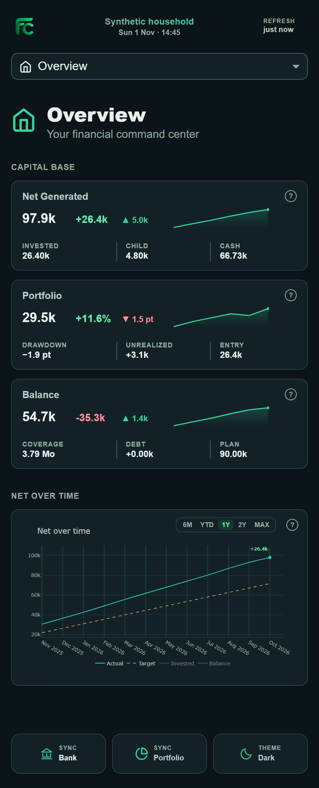
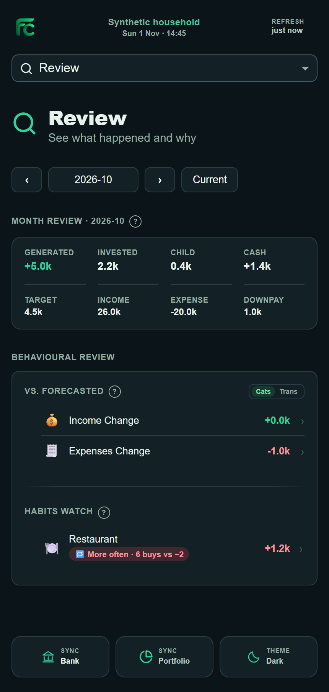
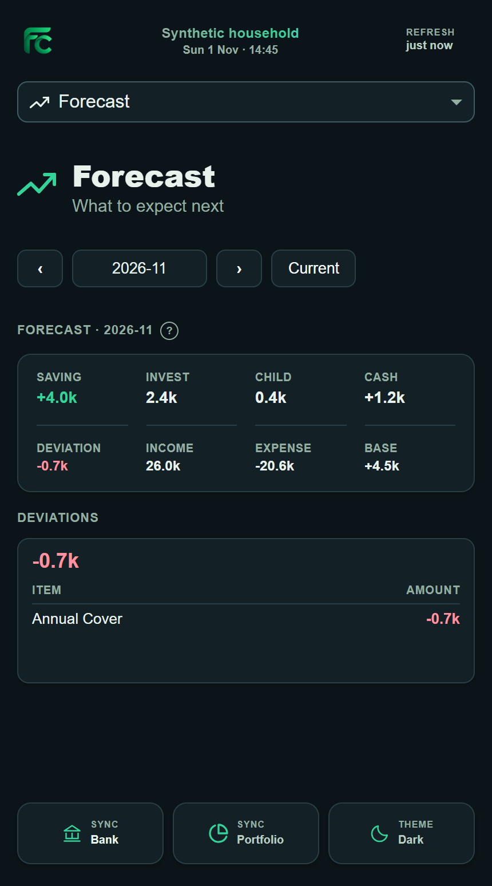
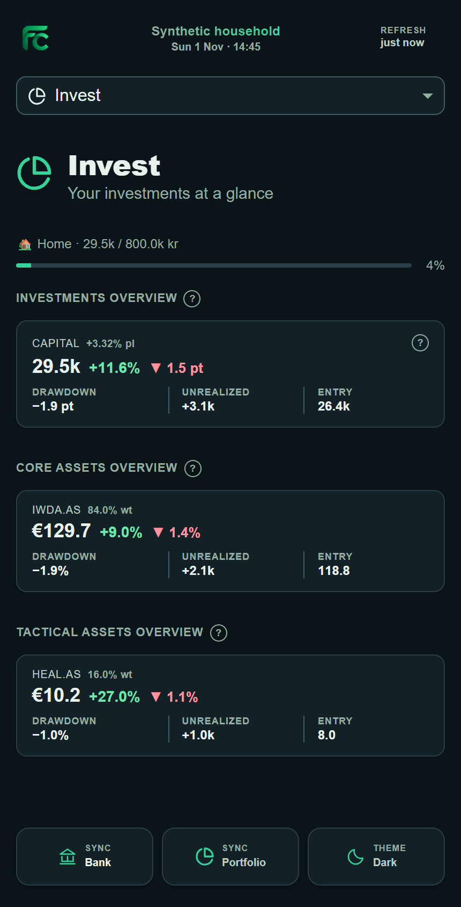
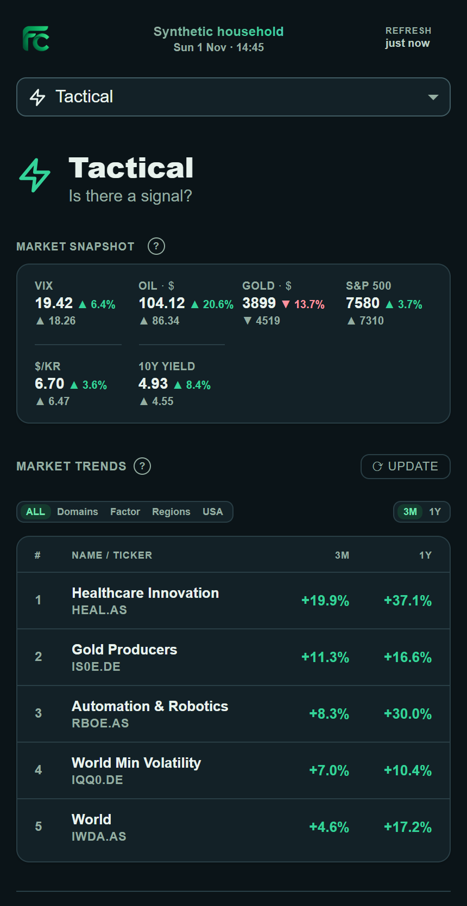
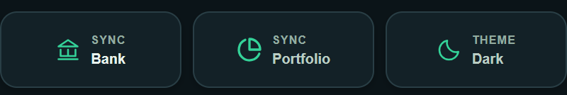
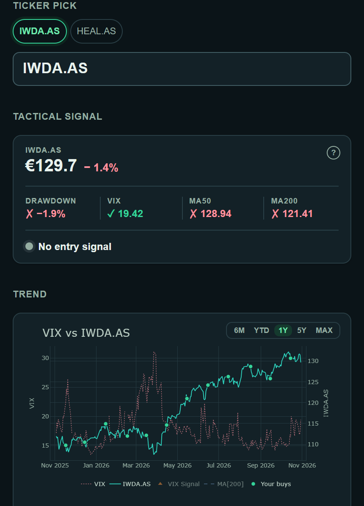
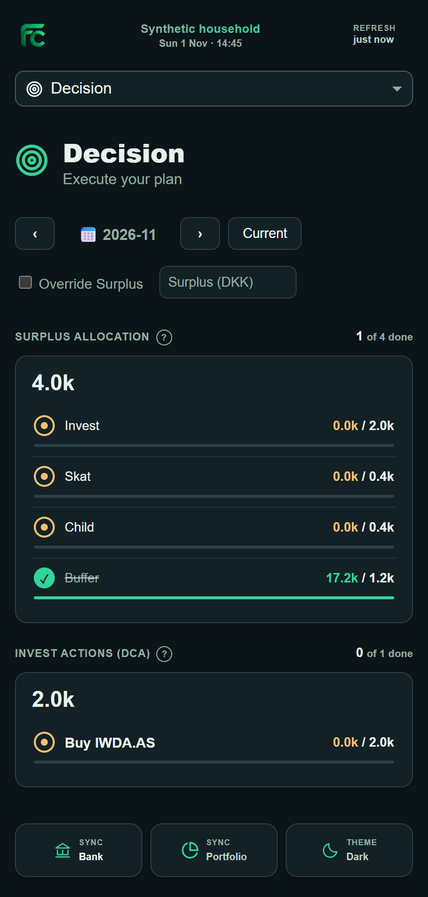
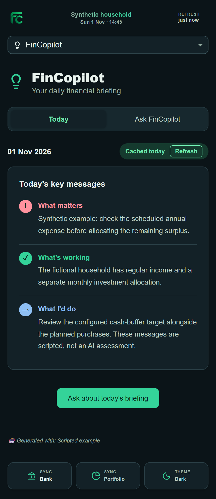
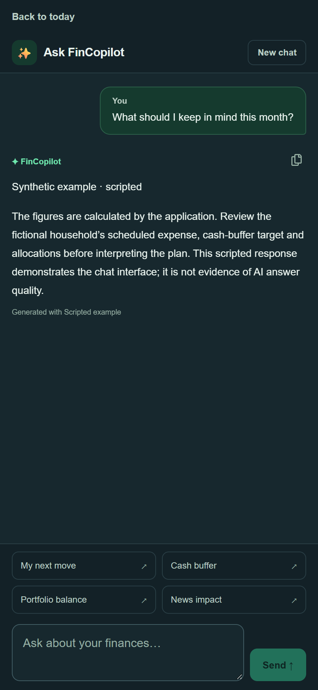

My financial information was spread across bank transactions, investment records and separate income and expense plans.
Bringing everything into one workflow started as a practical solution to a personal problem. Over time, it became an opportunity to explore data integration, financial modelling and applied AI through a system I use myself.
This walkthrough shows the working application with synthetic financial data. Market prices and exchange rates come from public sources.
A month with FinCopilot / 01
Where do I stand?
Overview brings financial progress, portfolio value and cash balance together. I designed it as a starting point before looking at individual transactions or holdings.
The trend adds context to those figures: how progress has developed over time and how it compares with the target. It helps me see whether a single month fits the wider pattern before deciding where to look closer.

A month with FinCopilot / 02
What changed?
Review compares a completed salary cycle with the configured plan, with categories and transactions underneath.
The October review flags restaurant purchases rising from two to six. Following that change into its transactions shows how a monthly total becomes something I can investigate.

A month with FinCopilot / 03
What is coming up?
Forecast uses configured income, expense schedules and planned allocations to show what a coming month might leave available.
A scheduled annual expense sits alongside the regular commitments. It gives the forecast a concrete assumption to inspect, rather than treating every month as identical.

A month with FinCopilot / 04
How do my investments fit?
Invest connects holdings, cost basis, returns and a performance benchmark with the wider financial workflow. The portfolio pairs an IWDA.AS core holding with a HEAL.AS tactical position.
Portfolio targets also feed the suggested purchases in Decision, connecting available funds with the allocation rules.

A month with FinCopilot / 05
What am I watching?
Tactical puts public market conditions beside an investment-level view. It connects market trends, price history and configured entry signals.
The expandable view follows IWDA.AS, bringing its price history, purchase markers and configured entry signals together.
The app also includes gradual purchase limits and entry and exit alerts. These are tools for review; trades remain manual.


See the investment detail

A month with FinCopilot / 06
What is my next move?
Decision helps me review where the expected surplus should go: investing, tax, my child, a cash buffer and an opportunity reserve.
Planned amounts sit beside recorded progress, so I can see what has been covered and what still needs attention. It gives me a plan to review before making transfers or placing trades.

A month with FinCopilot / 07
Talk it through
The daily briefing draws on supplied financial summaries, holdings and saved news to highlight what may deserve attention and explain the wider context.
When I want to go further, I can ask about the cash buffer, portfolio balance or next surplus. The explanations give me another way to explore the figures and decide what to look at more closely.

See the conversation example

Behind the interface
FinCopilot started as a personal analytics project. Building it has become a way to explore the engineering behind connected, AI-assisted applications.
Financial calculations should be reproducible, while AI should help explain and explore their results.
I keep data imports, financial calculations and AI interpretation separate. Transactions become salary-cycle summaries; configured schedules drive forecasts; allocation rules turn the result into a plan. This makes the figures and assumptions easier to inspect when an explanation raises a question.
Python, Dash, Pandas and Plotly form the core. Enable Banking provides the bank integration, Nordnet exports provide trade records, and yfinance supplies public market prices and exchange rates. Gemini and Anthropic are supported for AI interpretation.
For me, the interesting challenge is connecting data, logic and AI into a system that remains understandable. It is an opportunity to develop my skills in data engineering, system design and applied AI.
Still building
FinCopilot remains an independent personal project, shaped by financial questions I encounter and engineering ideas I want to explore.
Some parts are tools I use regularly. Others are experiments, particularly around making financial information easier to understand through AI.
I am continuing to refine the experience, improve the underlying design and explore what might be useful beyond my own routines, as part of my ongoing learning.
I share selected parts of that journey here: what I have built, the decisions behind it and what I am learning along the way.
Interested in the project? Get in touch.